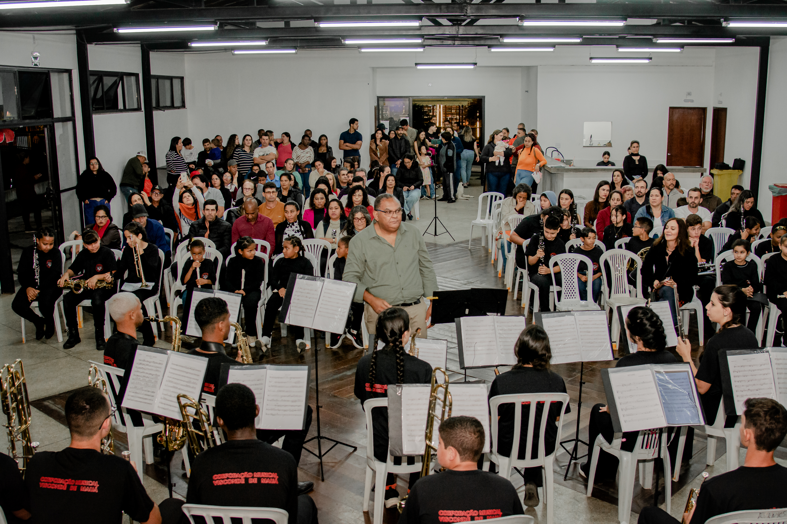

Musicalização
Atividades para desenvolver a percepção sonora, o ritmo, a escuta, a expressão e a familiaridade com a música.
Aprender música, desenvolver talentos e tocar em conjunto.
Da primeira nota à experiência de fazer parte de uma banda de música.
QUERO APRENDER MÚSICAA Formação Musical da Corporação Musical Visconde de Mauá (COMVIMA) é parte fundamental do trabalho educativo e cultural desenvolvido pela instituição desde 2003.
Por meio da Associação Parceiros Nota 10, a COMVIMA promove o acesso à aprendizagem musical, oferecendo oportunidades para que crianças, adolescentes e demais interessados desenvolvam conhecimentos, habilidades e experiências por meio da música.
A formação busca respeitar o ritmo de aprendizagem de cada participante, criando caminhos que vão da iniciação musical ao desenvolvimento instrumental e à prática coletiva.
Mais do que aprender a tocar, os alunos têm a oportunidade de desenvolver a escuta, a concentração, a disciplina, a cooperação e o sentimento de pertencimento a um grupo.

Ampliar o acesso à educação musical, desenvolver novos músicos e fortalecer a tradição das bandas de música, valorizando a cultura e a participação das comunidades.
A formação reúne diferentes experiências de aprendizagem, que podem variar conforme a turma, a etapa de desenvolvimento e os instrumentos disponíveis.
Atividades para desenvolver a percepção sonora, o ritmo, a escuta, a expressão e a familiaridade com a música.
Introdução à linguagem musical, aos elementos básicos da música e à leitura de partituras, de acordo com o nível de aprendizagem.
Contato com instrumentos musicais e desenvolvimento progressivo das técnicas necessárias para tocar, conforme a organização pedagógica e a disponibilidade de instrumentos.
Atividades coletivas que ajudam os alunos a compreender seu papel no grupo, acompanhar os demais músicos e desenvolver a execução musical em conjunto.
Para os alunos que avançam para essa etapa, os ensaios contribuem para a preparação de repertórios e apresentações da Corporação.
Contato com a história, o repertório e a importância das bandas de música para a vida cultural das comunidades.
A COMVIMA desenvolve atividades de formação musical em Visconde de Mauá e em outras localidades da região, conforme a programação de cada turma e projeto.
QUARTA-FEIRA
Horário: 19h às 21h
Idade: a partir de 6 anos
Horário: 19h às 21h
Idade: a partir de 13 anos
As atividades são organizadas conforme o perfil das turmas e podem envolver musicalização, aprendizagem musical, prática instrumental e atividades de conjunto.
A COMVIMA desenvolve atividades de formação musical em comunidades como Bocaina de Minas e Santo Antônio do Rio Grande, além de outras localidades atendidas por suas iniciativas.
Os dias, horários, locais e critérios de participação variam conforme o polo ou projeto. Entre em contato para consultar a programação vigente e identificar a turma mais adequada.
A formação musical da COMVIMA é voltada a pessoas interessadas em aprender música e participar de experiências educativas e coletivas.
A idade mínima e as condições de participação dependem da turma e do local de atendimento.
Para quem está começando, a iniciação musical oferece uma oportunidade de conhecer os fundamentos da música. Conforme o desenvolvimento e a organização das atividades, os alunos podem avançar para o estudo instrumental e a prática coletiva.
Entre em contato com a equipe. Vamos orientar você sobre as turmas disponíveis e as possibilidades de participação.
Para demonstrar interesse em participar das atividades de formação musical da COMVIMA:
Preencha o formulário de interesse.
Informe o nome do participante, a idade, a localidade e um telefone para contato.
Aguarde o retorno da equipe com informações sobre turmas, horários, vagas e orientações.
O preenchimento do formulário não garante automaticamente uma vaga. A participação depende da disponibilidade e da confirmação da equipe responsável.
QUERO APRENDER MÚSICAQuer conhecer as aulas, saber quais instrumentos são trabalhados ou descobrir qual turma atende à sua localidade?
Fale com a Associação Parceiros Nota 10 — COMVIMA.
Ao entrar em contato, informe que deseja saber mais sobre a Formação Musical da COMVIMA e, se possível, indique a localidade de interesse.
Desde 2003, a Corporação Musical Visconde de Mauá trabalha para ampliar o acesso à música e valorizar a tradição das bandas. A formação musical é parte desse compromisso: criar oportunidades de aprendizagem, incentivar novos talentos e fortalecer os vínculos entre a música e a comunidade.
Cada aula representa uma oportunidade de aprender, compartilhar experiências e construir novos caminhos por meio da arte.
COMVIMA — Transformando vidas através da música.